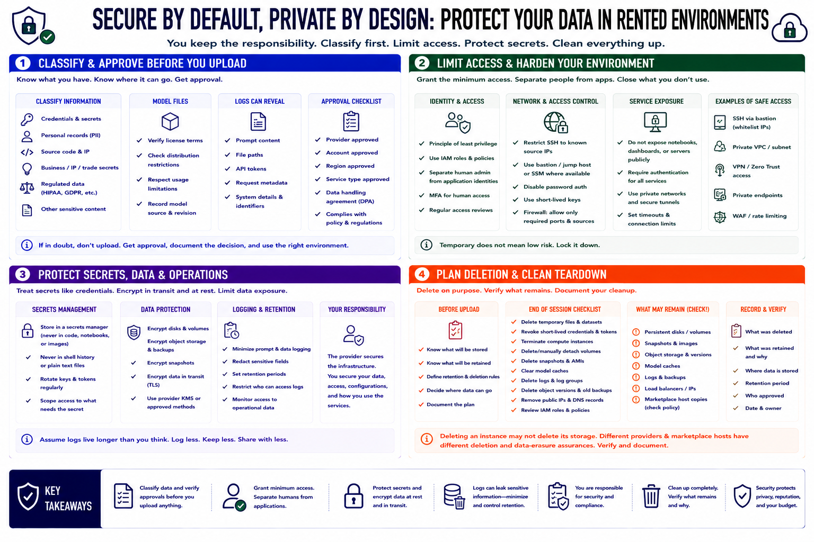

Data, Privacy, and Security
Connecting to LMS... Progress: in progress

Narration
Classify information before moving it into a rented environment. Prompts and uploaded documents may contain credentials, personal records, source code, intellectual property, or regulated data. Model files may have license or distribution restrictions. Logs can reproduce prompt content, file paths, tokens, and request metadata. Confirm that the provider, account, region, and service type are approved for the data involved.
Use identity and access management to grant the minimum permissions needed. Separate human administration from application identities. Protect SSH keys, rotate stale access, and restrict firewall rules to known sources and required ports. A notebook, dashboard, or inference server should not be exposed publicly without authentication simply because the rental is temporary.
Store API keys, repository tokens, and credentials in a secrets mechanism, not in shell history, notebooks, container images, or shared setup notes. Encrypt disks, object storage, snapshots, and network traffic according to policy. Minimize prompt logging, set retention periods, and control who can inspect operational data. Security responsibility remains with the renter even when the underlying hardware belongs to the provider.
Plan deletion before upload. At session end, remove temporary files, revoke short-lived credentials, and determine whether disks, snapshots, model caches, logs, object versions, or backups remain. Deleting an instance may not delete associated storage, while marketplace hosts may have different erasure assurances than major providers. Record what was retained and why. A clean teardown protects both privacy and cost.